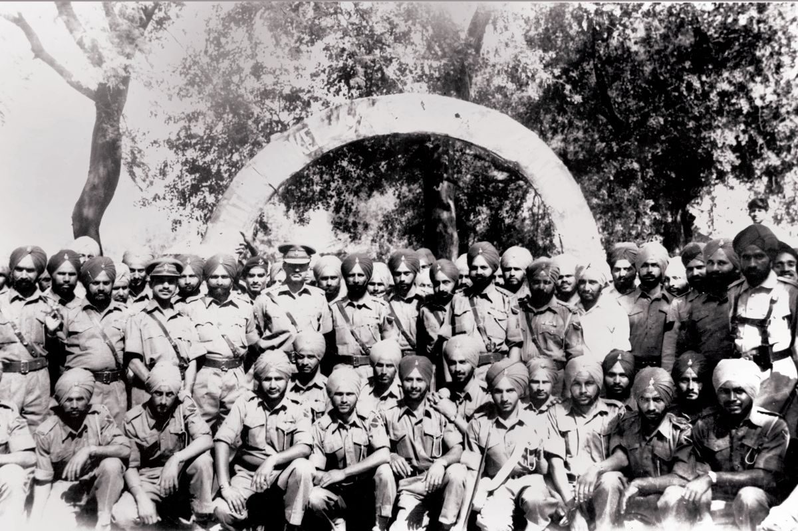
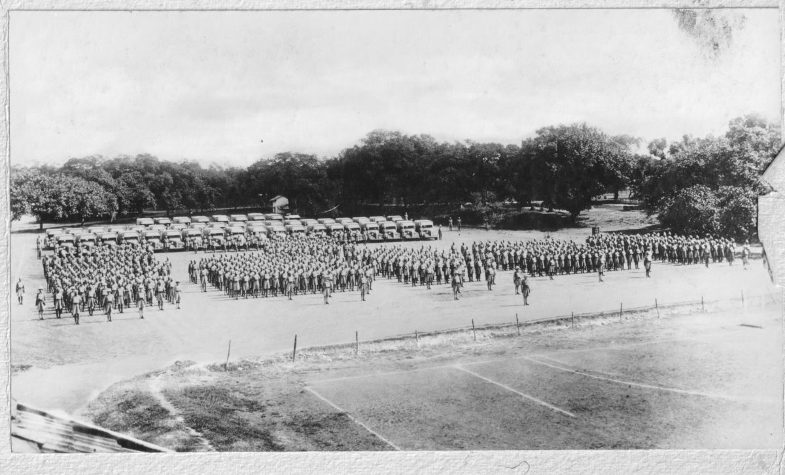
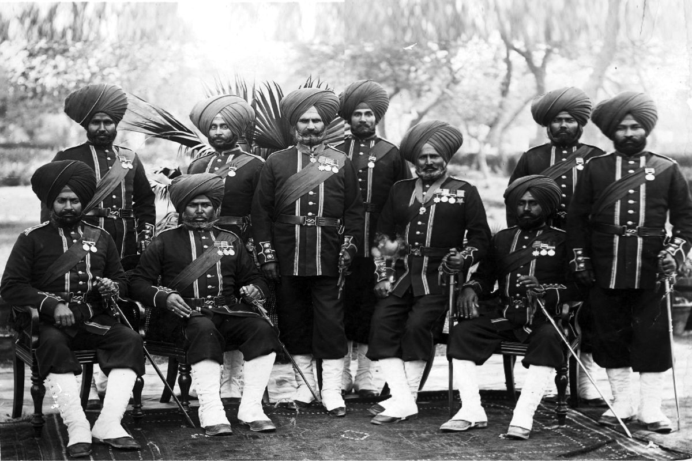
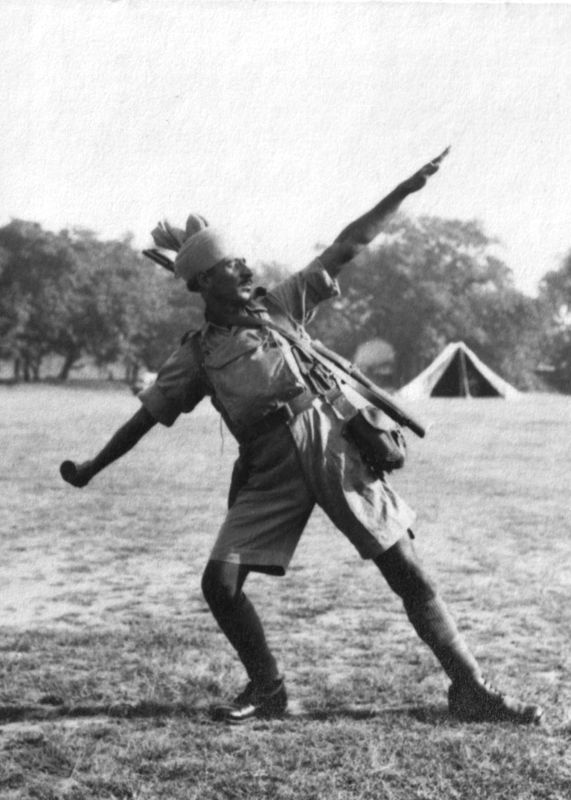
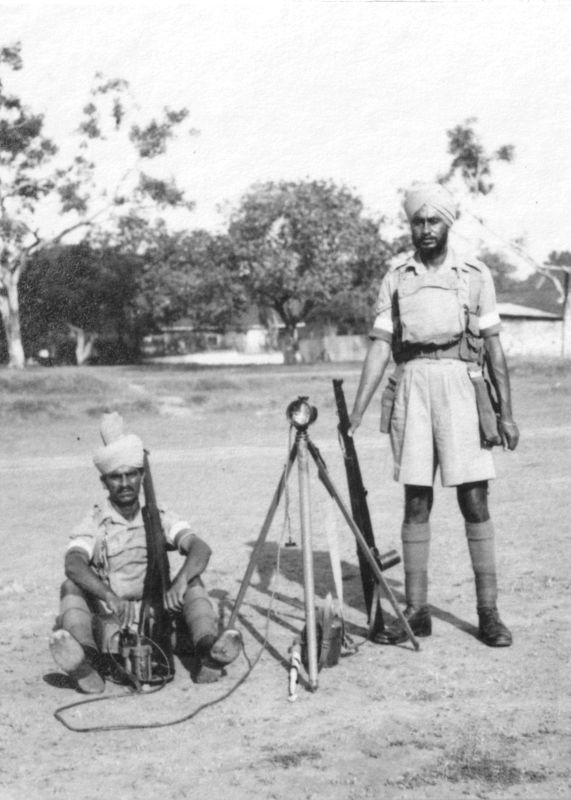
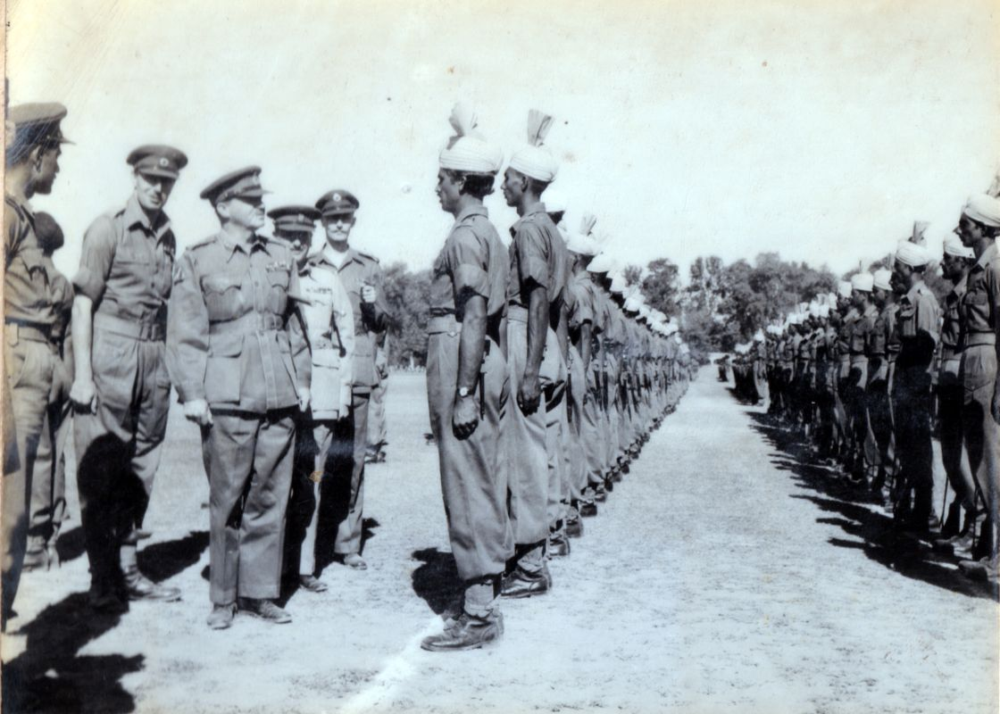
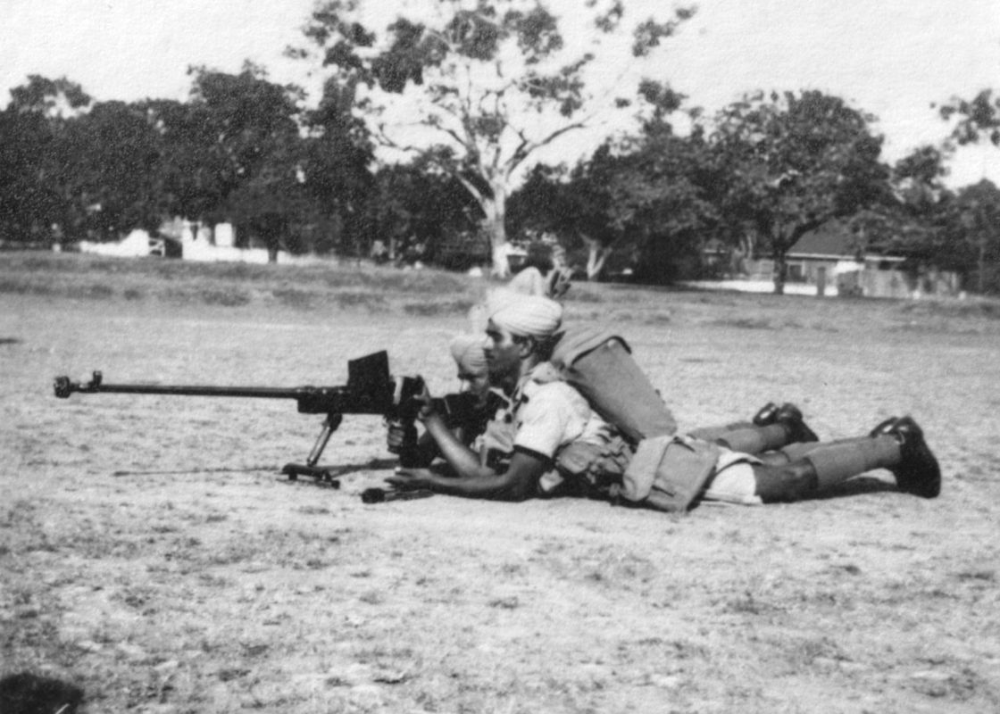
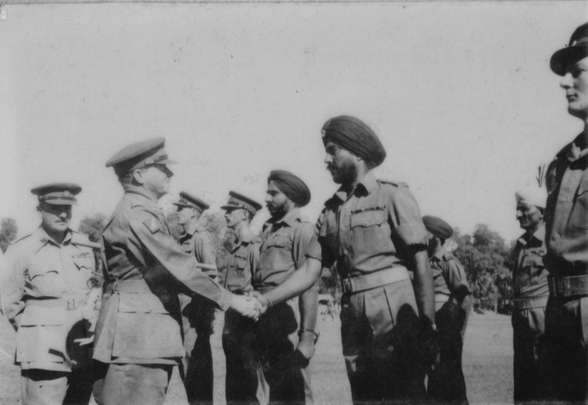
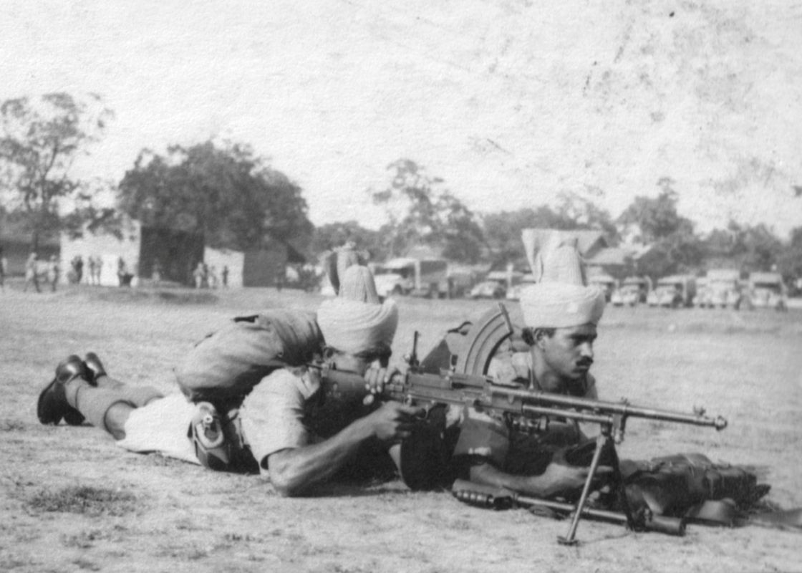

The Battalion was raised on 01 April 1964 at Meerut, initially under Major (later Major General) RT Morlin; on 17 September 1964, Lieutenant Colonel Harbans Singh took over as the first Commanding Officer. Post raising, the Battalion moved to Misamari. During Indo-Pakistan War of 1965, it was earmarked to launch a diversionary attack into erstwhile East Pakistan but was re-located to the Western Front. Before it could join the battle, ceasefire was declared and it returned to the Eastern Theatre. It moved to Amritsar in March 1967 for a peace tenure. On 02 March 1968, the Battalion received its first Colours at the Regimental Centre in Meerut. In June 1969, it moved to Tangdhar Sector in Jammu and Kashmir and the Battalion less a company was deployed in a defensive role in Naugam Sub-Sector, over a 10-kilometre frontage and at heights ranging from 9000 feet to 12000 feet.
At the outbreak of the 1971 Indo-Pakistan War, the Commanding Officer, Lieutenant Colonel (later, Major General and Colonel of the Sikh Regiment) Sam Chengapa was tasked to plan a limited offensive, with two companies supported by an artillery battery of 4.2-inch Mortars, with one company holding the firm base. Initial objectives were aimed to provide depth to the forward defences and establish a launch pad for further operations. Operations started on night of 06/07 December by Bravo Company, under Major KC Bali which captured enemy post of Thanda Pani. The commando platoon under Captain Karam Singh cut off the enemy rear. The next night, the enemy position at Kaiyan was attacked and captured by Charlie Company under Major Jai Narain and the commandos; among the large booty was a .30 Browning MMG, three POW and 12 enemy killed; the Battalion had one killed and three wounded. Next day, a fierce enemy counter-attack was beaten back under the dynamic leadership of 2nd Lieutenant Pushpinder. Delta Company, under Major Balu Ram was tasked for a special mission, to establish a Road Block on Road Muzaffarabad-Lipa. They infiltrated over 20 Kilometres to establish a Road Block by 0500 hrs on 09 December till 12 December 1971.
On 15 December, Alpha and Charlie Companies moved to capture Three Pimples in broad daylight. The enemy suffered heavily; weapons captured included four 3-inch Mortars, one 83mm Rocket Launcher, two LMGs, many rifles with huge quantity of ammunition. Further exploitation was stopped as ceasefire was announced on 17 December. By then, 9 SIKH had single-handedly captured 46 Square Kilometres of enemy territory, by unconventional tactics, speed, and surprise. Awards surprisingly were restricted to three Sena Medals and one Mention-in-Dispatches. An extremely high intensity and brave battle over two days was again fought by 9 SIKH at Three Pimples against a Pakistani Brigade in May 1972.
Throughout its service, 9 SIKH excelled in all military spheres — operational, training, sports and administration and was counted amongst the most distinguished Infantry Battalions of the Indian Army. It always lived up to its special motto, 'Sir Qaim, Jang Daim' (Till the Head is Firm, Battle will be won!). 9 SIKH won the prestigious General Chaudhary Trophy (awarded to the toughest professional Infantry Battalion of the Army) twice running (1966–67 and 1967–68) and its record of 383.16 points out of 400 was never bettered. The Battalion was sadly disbanded in September 1985 due to post-Operation Blue Star disturbances.
Scan to view this art record in Chrome on your phone.